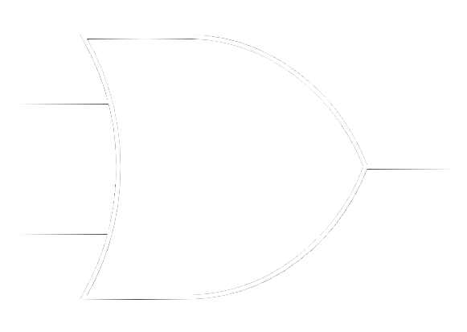
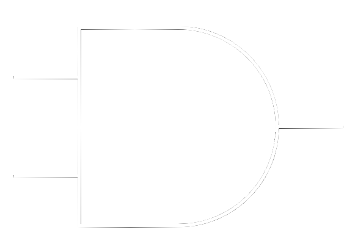

エレクトロニクスコースとは？
エレクトロニクスコース(通称:Eコース)は主に電気に関する事を学べる分野です。電気回路や電磁気、半導体について深く学べます。
どんなことをするの？
回路や半導体
エレクトロニクスコースでは電気回路や理論を学びます。電気回路では皆さんご存じのオームの法則から始まります。しかし、あれは実は直流回路のお話であり、交流回路では話が変わってきます。でも、式ではあまり変化がありません。
$$ V = IR $$
オームの法則(直流)
$$ V = IZ $$
オームの法則(交流)
IやVは見覚えがあると思います。しかし、交流のZとは何でしょう？Eコースではこれを学びます。他の法則ももちろんあるのですが、ここを深堀りするのはEコースのみです。また、オームの法則が通用しないものも出てきます。それが半導体で、聞き覚えがあると思います。そのため電流と電圧は別の方法で求めます。その理論ももちろん、実験実習や授業を通して学べます。
デジタルとアナログ、理論
私たちの世界ではデジタルとアナログがあり、電気の世界も同じです。例えばライトのON、OFFを切り替えるスイッチを思い浮かべてみてください。これをデジタルの世界では2進数として考えます。2進数は1と0でできている世界で、この場合は｢ONが1、OFFを0｣として考えます。さらにこの例をもっと深く考えると｢1は中身がつまっているもの、0は空っぽのもの｣と考えられます。実際に、これの仕組みを利用した記号を下に示します。

OR回路

AND回路
これも2年生後期できっと勉強することになります。理論は知能情報コースと全く同じことを学びますが、これを実際の回路に使用することはEコースの特色といえるでしょう。(この話は数学では集合という分野です。Eコースを希望している1年生は｢ド・モルガンの法則｣をしっかり勉強しておくように！)
そしてデジタルとは話が変わり、Eコースでは数学物理がとても重要になります。2年生のEコース専門科目では高校生で習う式で何とかなります。しかし、3年生に入るともう大学数学です。例えば2年生の物理でこのような公式を習います。
$$ F = k_e \frac{q_1 q_2}{r^2} $$
クーロンの法則
正直なところこれは文字が多いだけで、大して難しく考えなくても式の意味は何となく理解できるでしょう。しかし、3年生で学ぶ数式はこんな感じです。
$$\begin{cases}
\nabla \cdot \vec{E} = \frac{\rho}{\epsilon_0} \\
\nabla \cdot \vec{B} = 0 \\
\nabla \times \vec{E} = -\frac{\partial \vec{B}}{\partial t} \\
\nabla \times \vec{B} = \mu_0 \left( \vec{J} + \epsilon_0 \frac{\partial \vec{E}}{\partial t} \right)
\end{cases}$$
マクスウェル方程式
何が何だか分からないと思います。これを検索すると、分かりやすく解説されているものがありますが、大半が理論の説明です。これと並行して実際に計算することを学べるのがEコースです。他のコースでも3、4年生の数学物理で学びますが、Eコースはこの理論を計算するために最速で大学の数学物理をやります。そのため、後にする数学物理が楽になるのは間違いないと思います。
実験実習
エレクトロニクスコースでは実験実習がガラッと変わり、回路とパソコンを接続して行うものが多いです。組んでみた回路をデジタルな波形や数字として見るので、パソコンが必要になります。それで得られたデータでレポートを書くことがほとんどです。先程説明したデジタルとアナログの世界はここで活かされてきます。
どんなことができるようになる？
上記の事をまとめるとEコースではデジタルとアナログ、どちらも学べます。そのため、校長先生が都度仰られている｢DX｣を最も活かせられるコースこそがEコースです。また多様化における視点の広さは個人のセンスや技術によります。その技術をデジタルとアナログの二観点を両方とも重要視しているのもEコースです。そのため、DX化における変化に対応することができ、やるべき事が明確にできます。また資格もはっきりとしていて、｢電気分野ならこの資格は必須｣という資格の内容は全て必要です。そのためEコースでは多くのことを勉強しなければなりませんが、得られる技術は他のコースに比べて進んだものになるだろうと感じています。
オススメのサイト